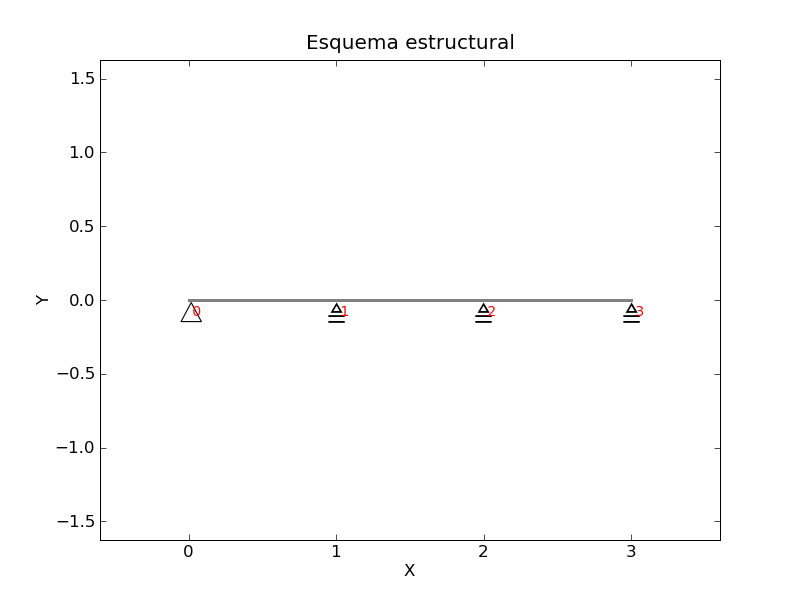
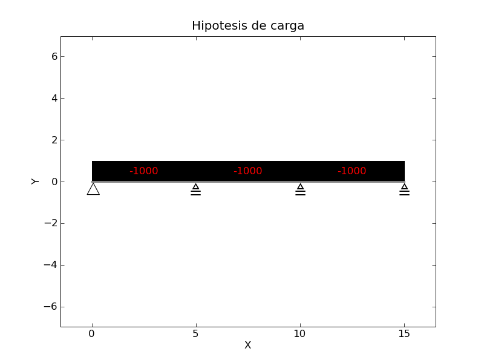
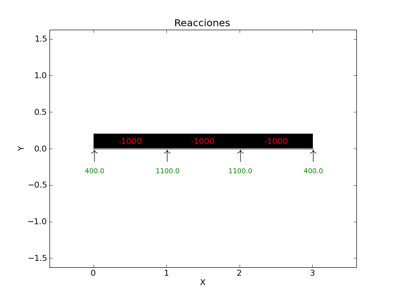
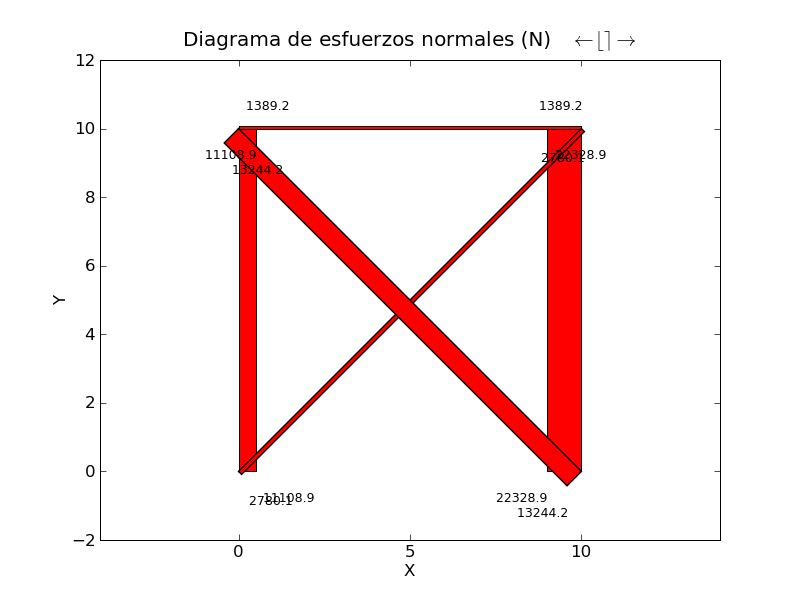
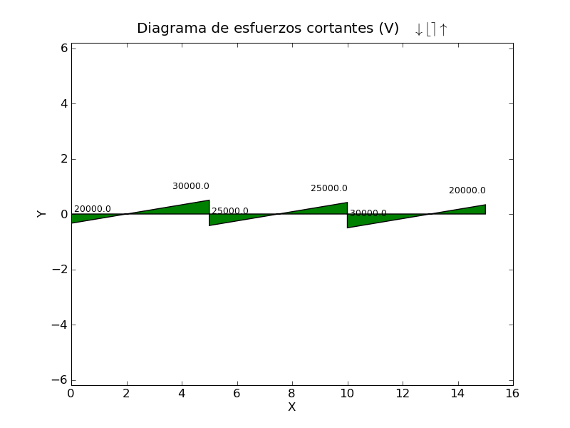
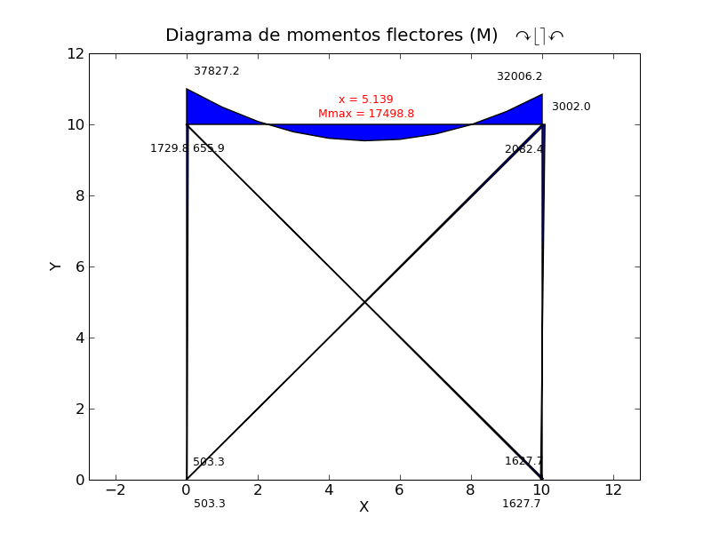
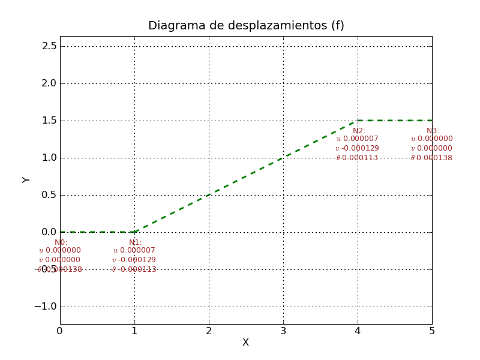

Informe de resultados
Problema
 | Nudos | Coordenadas | Coacciones |
|---|
| X [m] | Y [m] |
|---|
| 0 | 0.0 | 0.0 | apoyo articulado |
| 1 | 1.0 | 0.0 | rodillo |
| 2 | 2.0 | 0.0 | rodillo |
| 3 | 3.0 | 0.0 | rodillo |
| Barras | | Propiedades |
|---|
| L [m] | Tipo | A [mm2] | Iz [cm4] | Wz [cm3] |
|---|
| 0/1 | 1.0 | IPE 80 | 764 | 80.1 | 20.0 |
| 1/2 | 1.0 | IPE 80 | 764 | 80.1 | 20.0 |
| 2/3 | 1.0 | IPE 80 | 764 | 80.1 | 20.0 |
Cargas
 | Nudos | Cargas |
|---|
| FX [N] | FY [N] | MZ [Nm] |
|---|
| 0 | 0 | 0 | 0 |
| 1 | 0 | 0 | 0 |
| 2 | 0 | 0 | 0 |
| 3 | 0 | 0 | 0 |
| Barras | Cargas |
|---|
| qx [N/m] | qy [N/m] |
|---|
| 0/1 | 0 | -1000 |
| 1/2 | 0 | -1000 |
| 2/3 | 0 | -1000 |
Reacciones
 | Nudos | Reacciones |
|---|
| RX [N] | RY [N] | MZ [Nm] |
|---|
| 0 | 0.00 | 400.00 | 0.00 |
| 1 | 0.00 | 1100.00 | 0.00 |
| 2 | 0.00 | 1100.00 | -0.00 |
| 3 | 0.00 | 400.00 | -0.00 |
Esfuerzos
   | Barras | N1 | V1 | M1 | N2 | V2 | M2 |
|---|
| 0/1 | 0.00 | 400.00 | 0.00 | 0.00 | 600.00 | -100.00 |
| 1/2 | 0.00 | 500.00 | 100.00 | 0.00 | 500.00 | -100.00 |
| 2/3 | 0.00 | 600.00 | 100.00 | 0.00 | 400.00 | -0.00 |
Comprobación resistente
| Barras | Tipo | [%] |
|---|
| 0/1 | IPE 80 | 0.00 |
| 1/2 | IPE 80 | 0.00 |
| 2/3 | IPE 80 | 0.00 |
Desplazamientos
 | Nudos | Desplazamientos |
|---|
| dX [m] | dY [m] | gZ [rad] |
|---|
| 0 | 0.000000 | 0.000000 | -0.000001 |
| 1 | 0.000000 | 0.000000 | 0.000000 |
| 2 | 0.000000 | 0.000000 | -0.000000 |
| 3 | 0.000000 | 0.000000 | 0.000001 |
______________________________
Informe generado mediante MSA, con la aplicación del método matricial de la rigidez.
MSA - Copyright 2009, Jorge Rodríguez Araújo (grrodri@gmail.com).